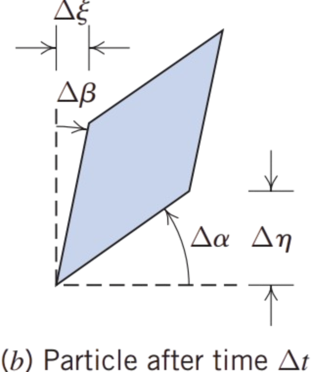
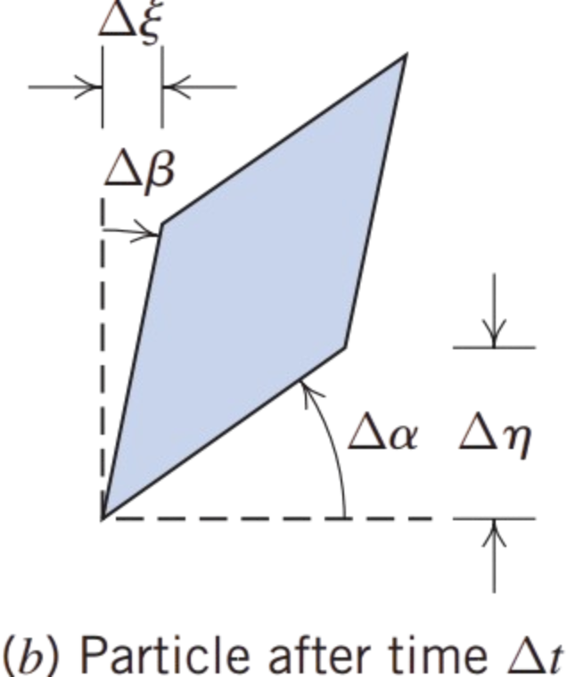

Now we can determine from \( \Delta \alpha \) and \( \Delta \beta \) a measure of the particle’s angular deformation, as shown in (d).
To obtain the deformation of side \( oa \) in
 ,
we use  and
,
we use  and 
\(\text{Let point } b \text{ be at } \Delta y \text{ above point } o\) \(\quad \because v_x(b) = v_x(o) + \left( \frac{\partial v_x}{\partial y} \right) \Delta y + \text{higher-order terms}\)
\(\because \ \text{Displacement}_b = \left( v_x + \frac{\partial v_x}{\partial y} \Delta y \right) \Delta t \quad \text{and} \quad \text{Displacement}_o = v_x \Delta t\)
\(\therefore \ \Delta \xi = \left( \frac{\partial v_x}{\partial y} \Delta y \right) \Delta t\) \(\quad \therefore \boxed{\ \Delta \beta = \frac{\Delta \xi}{\Delta y} = \left( \frac{\partial v_x}{\partial y} \right) \Delta t}\)
Likewise, \( \Delta \eta \) arises because, if in interval \( \Delta t \) point \( o \) moves vertically distance \( v \Delta t \), then point \( a \) will have moved distance \( (v_y + [\partial v_y / \partial x] \Delta x) \Delta t \)
\(\text{Let point } a \text{ be at } \Delta x \text{ to the right of point } o\) \(\quad \because \ v_y(a) = v_y(o) + \left( \frac{\partial v_y}{\partial x} \right) \Delta x + \text{higher-order terms}\)
\(\because \ \text{Displacement}_a = \left( v_y + \frac{\partial v_y}{\partial x} \Delta x \right) \Delta t \quad \text{and} \quad \text{Displacement}_o = v_y \Delta t\)
\(\therefore \ \Delta \eta = \left( \frac{\partial v_y}{\partial x} \Delta x \right) \Delta t\) \(\quad \therefore \ \boxed{\Delta \alpha = \frac{\Delta \eta}{\Delta x} = \left( \frac{\partial v_y}{\partial x} \right) \Delta t}\)
\(\text{Hence } \boxed{\Delta \xi = \left( v_x + \frac{\partial v_x}{\partial y} \Delta y \right) \Delta t - v_x \Delta t = \frac{\partial v_x}{\partial y} \Delta y \Delta t \quad,\quad \Delta \eta = \left( v_y + \frac{\partial v_y}{\partial x} \Delta x \right) \Delta t - v_y \Delta t = \frac{\partial v_y}{\partial x} \Delta x \Delta t} \)